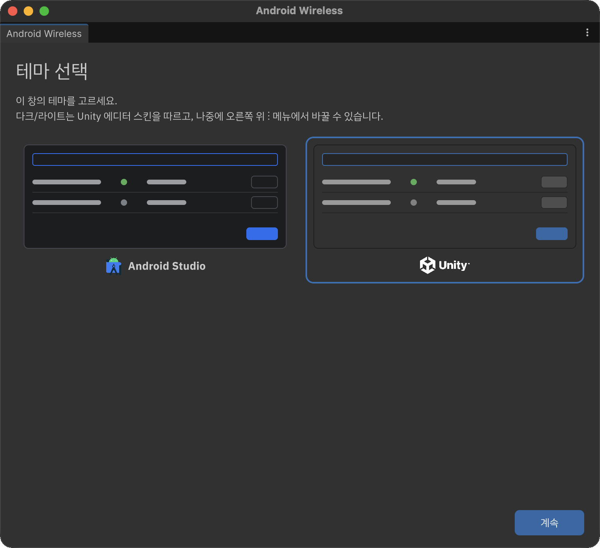
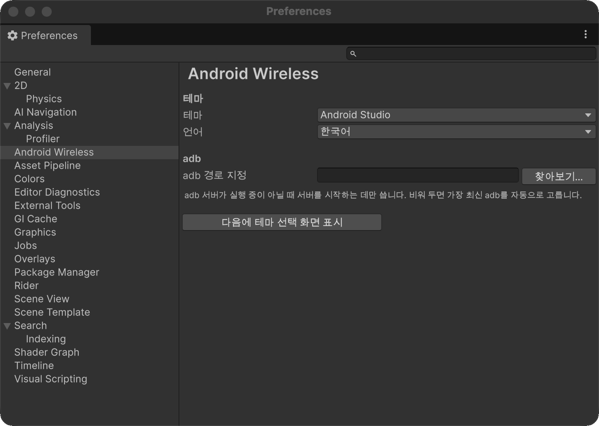

설정
모든 설정은 프로젝트가 아니라 사용자별(EditorPrefs)로 저장됩니다. 팀원마다 다르게 두어도 프로젝트에 영향을 주지 않습니다.
테마와 언어
처음 창을 열면 테마 선택 화면이 나옵니다. Android Studio와 Unity 중 하나를 고르고 계속을 누릅니다. 다크/라이트는 Unity 에디터 스킨을 따릅니다.

창 오른쪽 위 ⋮ 메뉴에서 언제든 바꿀 수 있습니다.

| 메뉴 | 설명 |
|---|---|
| 테마 | Android Studio / Unity |
| 언어 | English / 한국어 |
| 테마 선택 화면… | 테마 선택 화면을 다시 엽니다. |
| 환경설정… | Preferences > Android Wireless를 엽니다. |
환경설정
Edit > Preferences > Android Wireless (macOS: Unity > Settings > Android Wireless)에서 다음 항목을 바꿀 수 있습니다.

| 항목 | 설명 |
|---|---|
| 테마 | 창 테마 |
| 언어 | 창 표시 언어 |
| adb 경로 지정 | adb 서버가 실행 중이 아닐 때 서버를 시작하는 데만 씁니다. 비워 두면 설치된 adb 중 가장 최신 버전을 자동으로 고릅니다. |
| 다음에 테마 선택 화면 표시 | 버튼을 누르면 다음에 창을 열 때 테마 선택 화면을 다시 보여 줍니다. |
Platform-Tools 업데이트
Unity Android SDK의 Platform-Tools가 37 미만이면 기기 목록 위에 업데이트 안내가 나타납니다.
- 설치를 누릅니다.
- Android SDK 라이선스 계약 안내를 확인하고 동의하고 설치를 누릅니다.
- Unity SDK에 포함된
sdkmanager로 최신 Platform-Tools를 설치합니다.
당장 업데이트하지 않으려면 나중에를 누릅니다.